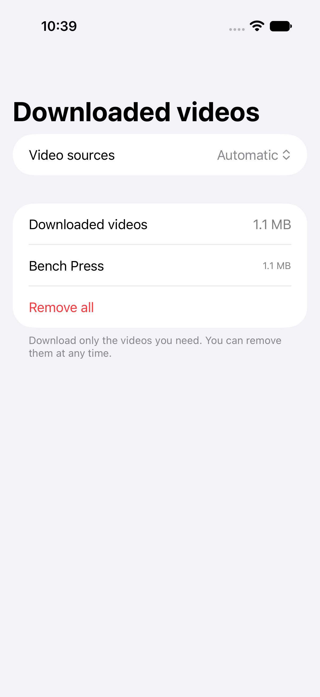
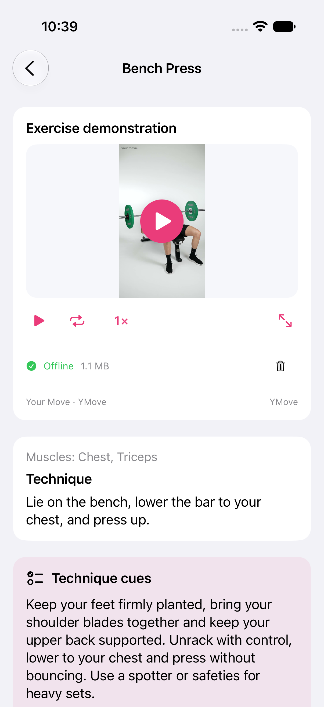

Nikita Revin, Tonus developer · November 20, 2026 · Version 1.7.1
If an exercise sends you to a video service that won't load, check the source setting in Tonus. One switch changes where the app looks for a demo. A clip you've already downloaded plays from your phone.
Find the setting in Profile
Open Profile and tap Downloaded videos. The Video sources menu is at the top. Pick a source, then reopen the exercise to see which demo it offers.

What the three choices do
- Automatic. Tonus uses the Russian source order if your language is Russian or your device region is set to Russia. For other settings, it uses the YouTube source order.
- For Russia. Tonus looks for a video it can play in the app. If there isn't one, it looks for a RUTUBE link for that exercise.
- YouTube. Tonus looks for a YouTube link for the exercise first. If there isn't one, it can play a video in the app when a supported clip is available.
YouTube and RUTUBE use an internet connection and may show ads. If your selected source has no demo for that exercise, you can still read its written instructions.
Why a saved clip stays the same
The Offline label under a video means you already have a copy. Tonus plays that copy first with any of the three settings. The source switch leaves your saved clips in place.
